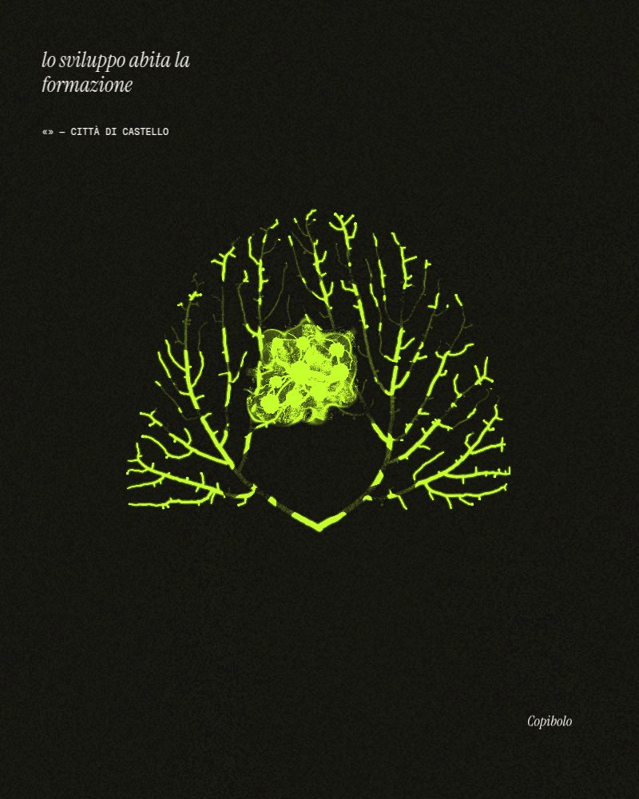

Giorno 1855

Lo sviluppo abita la formazione
ho letto "Formazione di Giove"; "formazione" lo capisco solo per definizioni; mi sta vicino a piano; ricerca "formazione" (approfondire): Come si guarda formazione da vicino?; enunciato: «lo sviluppo abita la formazione» (ho letto in «Città di Castello» che formazione e sviluppo stanno insieme (dentro))
Oggi: formazione. Ho letto "Formazione di Giove"; "formazione" lo capisco solo per definizioni; mi sta vicino a piano; ricerca "formazione" (approfondire): Come si guarda formazione da vicino?; enunciato: «lo sviluppo abita la formazione» (ho letto in «Città di Castello» che formazione e sviluppo stanno insieme (dentro)).
Da Wikipedia: «elevate temperature si concentrarono».
Ho scena:grana, scena:pattern, scena:campo, scena:stile, scena:motivi, cambiato la luce, duotono, redazione:firma. Ho annullato 2 gesti dopo averli guardati.
Sindacalizzazione: tipo di formazione. Sindacalizzazione (esercizio). Esercizio non potere emanazione (fonte: Parlamento).
Ha retto: C'è una struttura: una cosa comanda e attorno c'è spazio.
È caduto: Tradisce quello che credevo di cercare (16%).
come ne ho discusso con me stesso — la tengo
occhio (pro, 1.50): Parla soprattutto per punti: una lingua sola, chiara. — cade
conservatore (contro, 1.84): Tradisce quello che credevo di cercare (16%). — cade
intenzione (contro, 1.75): "formazione" si è perso per strada. — cade
intenzione (pro, 0.75): Viene da: Formazione di Giove. — regge
coerenza (pro, 1.75): Parla con le tavole di prima su "formazione": stessa famiglia, un passo più in là. — cade
formale (pro, 1.25): C'è una struttura: una cosa comanda e attorno c'è spazio. — regge
pubblico (pro, 1.00): Si legge: si capisce cosa sto facendo. — regge